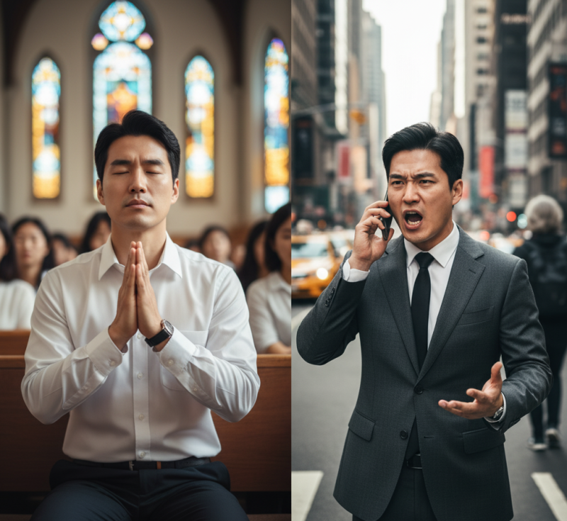
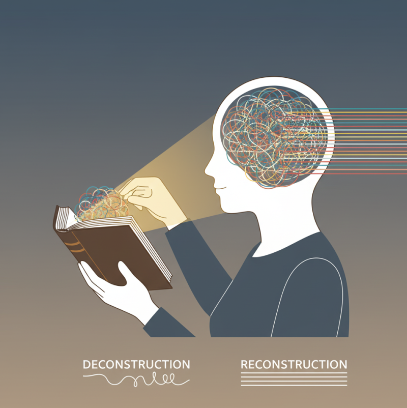

: 교회가 잃어버린 '공의'와 '은혜'의 기준 목회 현장이나 혹은 신앙 공동체 안에서 이런 딜레마를 마주할 때가 있다.
“어려움을 겪는 성도를 위해 교회가 '은혜'로 많은 배려와 도움을 베풀었다.하지만 시간이 지나자 그 성도는 그것을 '은혜'가 아닌 '당연한 권리'로 여기기 시작한다.”
공동체의 질서를 위해 '원칙'과 '법'을 이야기하면 "사랑이 없다"는 비판을 받는다. 반대로 '사랑'과 '이해'를 강조하면 공동체 전체의 질서와 기준이 무너지게 된다.
'공의(정의)'와 '은혜(사랑)'이라는 두 가지 가치 사이에서 어떻게 균형을 잡아야 할까? 왜 우리는 이토록 쉽게 "좋은 게 좋은 것"이라는 함정에 빠져, 은혜를 값싼 동정으로 만들고 공의를 차가운 정죄로 오해하는 것일까? 이 혼란의 중심에는, 오늘날 많은 교회가 '삶의 기준틀'을 잃어버렸다는 근본적인 문제가 있다.
첫째. '공의'가 무너진 자리에 '은혜'는 없다는 것이다.많은 사람들이'공의'와 '은혜'를 반대되는 개념으로 생각한다. 공의는 율법적이고, 은혜는 복음적이라고 이분법적으로 나눈다. 하지만 성경은 "공의(법)를 모르면 은혜가 무엇인지 알 수 없다"고 분명히 말하고 있다. 성경의 4분의 3이 구약이며, '율법'에 대한 이야기인 것은 우연이 아니다. 하나님은 왜 그토록 긴 시간 동안 율법과 표준을 가르치셨을까? 그 이유는... 1) '표준'을 제시하기 위함이다."사람은 이렇게 살아야 한다"는 하나님의 거룩한 기준을 보여주신다. 2) '죄'를 깨닫게 하기 위함이다. 그 거룩한 표준 앞에서 인간이 얼마나 철저하게 불완전하고 실패한 존재인지(죄인) 스스로 직면하게 만드신다. 3) '은혜'로 나아가게 하기 위함이다. 자신의 힘으로는 도저히 그 표준에 도달할 수 없음을 절감한 자만이, 예수 그리스도의 '은혜'가 얼마나 절대적으로 필요한지 깨닫고 그 앞에 엎드리게 된다..
공의는 은혜의 필요성을 알려주는 진단서와 같다. 진단 없이 처방(은혜)만 남발하면, 그 약은 가치를 잃어버리게 된다. 마찬가지로 교회 안에서도 '공의'의 기준이 명확해야 한다. 예를 들어, 어떤 사역에 대한 정당한 보상(공의)이 얼마인지 명확히 정하지 않고, '은혜'라는 이름으로 더 많이 주게 되면, 그 '은혜'는 곧 '기대치'로 변질된다. 기준이 없으면 감사는 쉽게 불평으로 바뀐다. 둘째. '삶'이 아닌 '종교'가 되어버린 신앙 왜 우리는 이토록 '공의'라는 기준을 세우는 데 실패했을까?신앙이 본질을 잃고 '종교 행위'로 전락했기 때문이다. 독일의 신학자 본회퍼는 "기독교는 종교가 아니다"라고 했다. ‘종교'가 인간이 신을 이용하려는 시도라면, '신앙'은 신의 부르심에 응답하여 세상 속으로 들어가는 삶 그 자체라는 것이다.다시 말해 본래 신앙은 우리의 '삶의 시스템(Life System)'이자 '세계관(Worldview)' 그 자체여야 한다. 하지만 오늘날 많은 이들에게 신앙은 다음과 같은 '종교'가 되었다. * 의식 중심의 종교: 주일 예배에 참석하고, 뜨겁게 찬양하고, 감동적인 설교를 듣는 '행위' 자체가 신앙의 전부가 된다. * 기복 중심의 종교: 나의 필요와 안녕, 축복을 위해 하나님의 도움을 구하는 수단이 된다. * 분리된 종교: 예배당 안에서의 모습과 세상 속에서의 삶이 완전히 분리됩니다. 교회에서는 거룩한 장로가 세상에서는 부도덕한 사업가로 살아가는 것을 아무렇지 않게 여긴다.

이러한 '종교' 안에서 목회자들은 성도들의 귀를 즐겁게 하는 '위로, 사랑, 축복'만을 외치게 된다. 성도들의 삶을 변화시키는 '공의'와 '진리', '회개'를 외치면 사람들이 떠나갈까 봐 눈치를 본다. 결국 양(Quantity)은 늘어날지 몰라도, 질(Quality)은 떨어지게 되는 것이다.이렇게 '공의'의 기준이 사라진 교회는 세상의 빛과 소금이 될 힘을 잃어버리고 만다. 3. '기준틀'을 다시 세우는 훈련그렇다면 이 무너진 기준을 어떻게 다시 세울 수 있을까? 간단히 말해 '하나님의 말씀'이라는 유일한 '기준틀(Reference Frame)'을 갖도록 훈련하면 된다. 이것은 단순히 성경 지식을 더 많이 가르치는 것을 의미하게 아니다. 1) '전체(큰 그림)'로 보게 해야 한다. 지금까지 우리는 성경을 파편적으로 쪼개어 '내가 원하는 구절'만 취해왔다. 성경 전체를 관통하는 하나님의 '큰 그림' 안에서 본문을 해석하도록 가르쳐야 한다. 나무가 아닌 숲을 보는 훈련이 필요하다. 2) '논리(이유)'를 묻고 생각하게 해야 한다. 말씀을 듣고 "은혜받았습니다"에서 그치는 것이 아니라, "왜 그렇게 생각해야 합니까?", "이 말씀을 가지고 한주간의 삶을 어떻게 살아내야 합니까?"라고 집요하게 물어야 한다. 성도들이 스스로 생각하고, 자신의 삶을 말씀의 기준에 비추어 논리적으로 연결하는 훈련을 시켜야 한다. 3) '탈학습(Unlearning)'의 과정을 거쳐야 한다. 특히 신앙생활을 오래 한 성인들은 이미 세상의 가치관과 잘못된 신앙의 틀이 견고하게 자리 잡고 있다. 이들은 백지(0)에서 시작하는 것이 아니라, 이미 잘못 그려진 그림(-10)에서 시작한다.이들이 가진 기존의 잘못된 틀을 깨고(탈학습), 새로운 기준틀을 세우는 과정은 훨씬 더 많은 시간과 인내를 요구한다.

결론: 기준이 서야 진짜 위로가 시작된다 삶에서 겪는 '공의'와 '은혜' 사이의 갈등은, 둘 중 하나를 선택해야 하는 문제가 아니다. 오히려 하나님의 '공의'라는 단단한 기준 위에 '은혜'라는 집을 짓는 순서의 문제다. * 목회자는 자신의 사명이 성도들의 숫자를 늘리는 것이 아니라 하나님의 기준을 따르는 제자를 세우는 것임을 기억해야 한다. 세상의 소리나 성도의 눈치를 보는 것이 아니라, 하나님의 말씀을 가감 없이 전하는 '성실한 심부름꾼'이 되어야 한다. 진리를 타협하지 않을 때, 그 진리 위에 선 공동체는 흔들리지 않을 것이다. * 성도들은 참된 신앙이 "쉽게 믿고 천국 간다"는 값싼 위로가 아님을 기억해야한다. . 그것은 나의 부패한 본성을 정면으로 마주하고, "나는 죄를 짓고 싶은가, 죄를 미워하는가?"를 치열하게 고민하는 '거룩한 싸움'을 하는 것이다. 이 싸움은 어렵다. 그래서 매일 하나님의 은혜가 필요하다. 기준이 없는 위로는 공허한 속삭임에 불과하다. 하지만 하나님의 무겁고도 명확한 '공의'의 기준을 받아들일 때, 비로소 우리를 구원하신 십자가의 '은혜'가 얼마나 압도적이고 감격적인지 깨닫게 될 것이다.